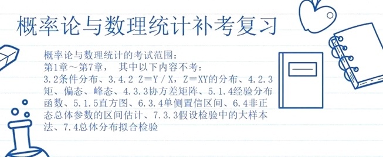
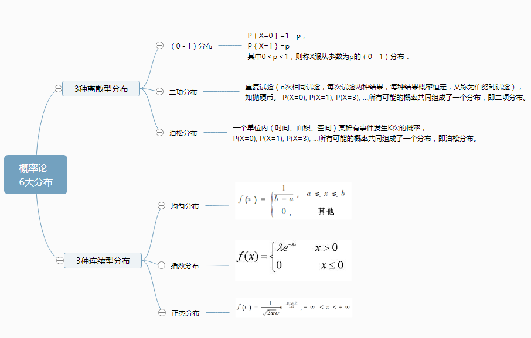
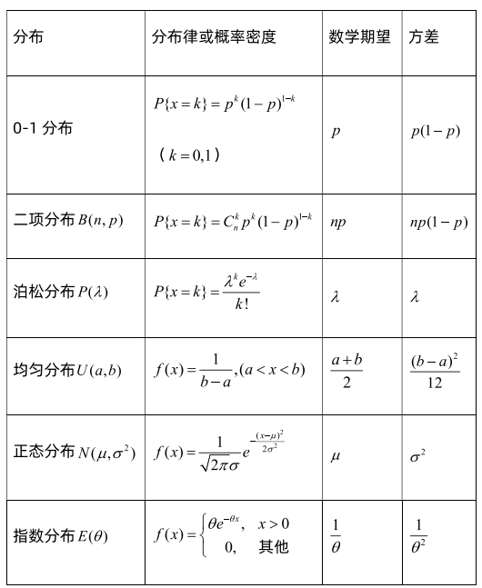

资料华中师范大学网络学院《概率论》MATHTSING的个人空间-MATHTSING个人主页-哔哩哔哩视频2小时过概率期末.pdf20220213_概率论与数理统计_期初挂科辅导_哔哩哔哩_bilibili范围基本概念事件关系与事件运算条件概率与乘法公式两个模型全概率与贝叶斯独立分布函数、概率密度、分布律数字特征数学期望方差协方差相关系数六大分布0-1分布Bernoulli distribution二项分布Binomial distribution泊松分布Poisson distribution均匀分布Uniform distribution正态分布Normal distribution指数分布Exponential distribution几何分布极限定理切比雪夫不等式Chebyshev不等式大数定理中心极限定理样本及抽样分布三大分布正态总体下的抽样分布参数估计点估计估计量的评选标准区间估计假设检验假设检验其他Gamma Function伽马函数平方和公式表
6(7q~@@333c%605y~8npgi_f.png)